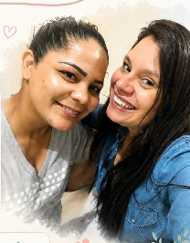
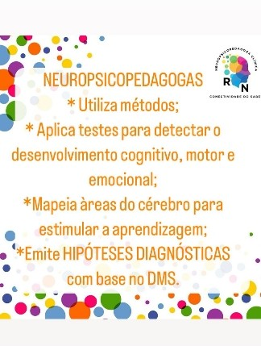
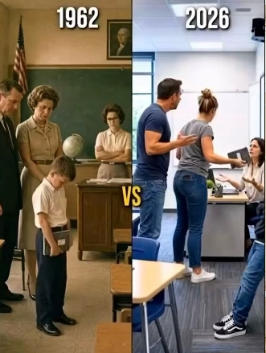
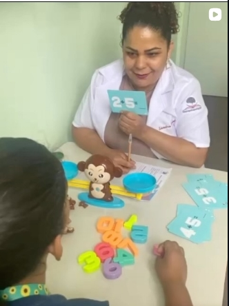
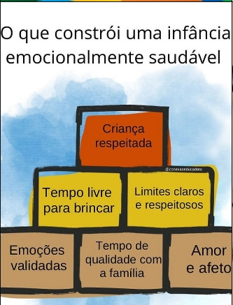
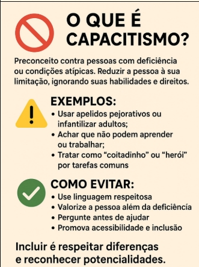

Desenvolvimento Cognitivo
Estímulo de funções vitais como memória, atenção, foco, raciocínio lógico e planejamento estratégico.
Entenda como esse profissional pode contribuir com a ativação cognitiva da sua criança. Cuidar da mente é abrir caminhos para o futuro.
Agendar Consulta
Somos Elaine Romanha Pavechi e Sandra Nobre, Neuropsicopedagogas Clínicas. Nosso trabalho em Osasco, SP, é focado em entender como o cérebro absorve informações e em ajudar crianças a superarem barreiras de aprendizagem, devolvendo a elas a autoestima e o prazer de aprender.





Estímulo de funções vitais como memória, atenção, foco, raciocínio lógico e planejamento estratégico.
Técnicas que transformam o estudo em algo prático e compreensível, respeitando o ritmo da criança.
Trabalho integrado para que o estudante ganhe confiança em si mesmo e perca o medo de errar.
Orientação próxima aos pais para que o suporte e a evolução continuem também dentro de casa.
A Avaliação Neuropsicopedagógica tem como objetivo identificar e compreender as dificuldades que podem estar interferindo no processo de aprendizagem da criança ou adolescente. Por meio de procedimentos científicos e observações clínicas, realizamos um mapeamento das habilidades cognitivas, acadêmicas, emocionais e motoras, permitindo uma compreensão ampla do desenvolvimento do estudante.
Ao final do processo é elaborado o Relatório Avaliativo Neuropsicopedagógico (RAN), contendo a descrição de todo o percurso avaliativo, resultados observados, orientações para a família, escola e demais profissionais envolvidos.
Quando pertinente, hipóteses diagnósticas poderão ser descritas com base nos critérios estabelecidos pelo DSM-5, sempre respeitando os limites de atuação da Neuropsicopedagogia.
Preencha o formulário abaixo para tirar dúvidas ou agendar uma sessão em Osasco, SP.